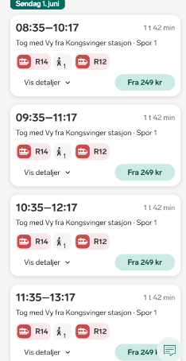

Dlho odkladané dobrodružstvo, a pokus nájsť odpoveď na otázku - je to švédsko naozaj taká bomba-šupa ako to šuflo donekonečna opisuje?
zdá sa, že nám neostáva nič iné len ísť priamo na miesto činu a presvedčiť sa na vlastné oči,..
čaká nás velké dobrodružstvo, švédsky les a možno aj ozajstná divočina,..
..a k tomu samozrejme sprosté reči a veľa veľa podpichovania,..
29.05.2025 - 02.06.2025 (* 2 kusy len do prvého)
velice tradičný švédsky domček pri jazere: fäbron house
kľúče od miechačky nám da Robo na tejto adrese: robova základňa
(je to na našej ceste cca 4 km pred Fäbron house)
tento batonček zmagnem až keď sa dostanem šťastlivo do fäbronu,..
| Start Finish |
Action |
|---|---|
| 05:00 - 06:00 |
Binďas cestuje vlastným autom smer Banská Bystrica.. zvládne za hodinku,.. inak všimli ste si, že v slove binďas je aj slovo ĎAS? to nemôže byť náhoda,.. |
| 06:00 - 07:15 |
Poľovník Peter vyzerá akoby v betónovej džungli číhal na svoju korisť,.. ale pušku nemá, to len čaká na binda a spolu vyrážajú smer Ružomberok. (hodina a 15 min by mala stačiť) |
| 07:30 - 10:30 |
Na stanici v Ružomberku je veselo,.. všetci sa radostne zvítajú a spolu vyrážajú smer Krakow, ako maďari, na dvoch autách. (máme na to 3 hoďky, finger crossed) |
| 10:30 - 11:00 |
V Krakowe na platenom parkovisku nechávame obe autá a vyrážame taxíkom v cene rovno na letisko. ak pôjde všetko podľa plánu, mame dve hoďky do odletu,.. |
| 13:05 - 15:30 |
letíme vzduchom do osla, juch!! |
toto nemám celkom pod kontrolou,.. na rentals.com stále svieti napríklad VW ID.3 za 188 evríkov,.. doporučujem buknúť čo najskôr ak je tam free cancelation policy
| Day | Action |
|---|---|
| štvrtok | Doprava na miesto činu a večerný chill. |
| piatok | Fishing, kayaking, moose chasing.. |
| sobota | Fishing, kayaking, moose chasing.. |
| nedeľa | Ráno zaniest dvojicu do Konsvinger, poobede - Fishing, kayaking, moose chasing,.. you know the drill,.. |
| pondelok | Presun na letisko, let do Krakowa a každý domov za rodinou, porozprávať zázitky. (Tu by som poradil, moc to nepreháňať lebo vás nabudúce nikam nepustia,.. a samozrejme, rokmi overená, najlepšia taktika je: zatĺkaj, zatĺkaj, zatĺkaj!) |
najskôr si vyber modrú alebo červenú pilulku, od toho závisí akou cestou sa vyberieš, tak si to dobre rozmysli !! (lebo do mačky nemôžete ísť šeci naraz)
nedeľa 01.06.2025 - odpadlíci
| Start | Finish | Action |
|---|---|---|
| 08:00 | 09:00 | odpadlikov zavezieme do konsvinger (Hulvát prípadne viacerí), a uistíme sa že nastúpili na ten správny vlak,.. lístky už majú kúpené cez vy.no  |
| 09:00 | 11:00 | vlak s prestupom v lillestrom,.. trochu stresu na záver, predbežne rátam časy 9:35-10:44 a 11:05-11:17 |
| 13:05 | 15:20 | letíme vzduchom do krakowa, juch!! |
| 15:30 | 20:30 | neni čo riešiť - na parkovisko, do bystrice, do sklených,.. nezabudnúť na posledný check point batonček,.. |
pondelok 02.06.2025 - true northern explorers
| Start | Finish | Action |
|---|---|---|
| 10:00 | 14:00 | upratať, odovzdať klúče, a tahet na letisko, máte času na rozdávanie,.. ale nepodceňnoval by som to.. |
| 15:55 | 18:20 | letime vzduchom do krakowa, juch! |
| 18:30 | 22:30 | you know the drill - na parkovisko, do ružomberka, do popradu alebo kde všade to bývate,.. nezabudnut na finálny check point |
| Položka | Cena | Poznámka |
|---|---|---|
| Z domu na letisko a späť (BB-Krakow) - odpadlíci | 22 EUR/osoba | Spotreba na 100 km * 4,30 * cena za liter šťavy /2 |
| Z domu na letisko a späť (RK-Krakow) - TNE | 11 EUR/osoba | Spotreba na 100 km * 3,20 * cena za liter šťavy /3 |
| Letenky | 45 EUR/osoba | Ak to neposeriete a nekúpite si za 60 EUR |
| Parkovné v Krakowe | 20 EUR/auto | Vrátane taxi na letisko!!! |
| Prenájom auta a pohonné látky | 50 EUR | (200 + 50)/5 |
| Ubytovanie - True Northern Explorers | 93 EUR/osoba | 3x20eur + 1x33eur (chata stoji 100€/noc) |
| Ubytovanie - Odpadlíci | 60 EUR/osoba | 3 noci x 20 eur/osoba |
| Vlak Konsvinger - Letisko | 25 EUR | iba odpadlíci |
| Rybársky lístok | 7 EUR | Nieže budete pytliačiť a narobíte hanbu Robovi a organizátorovi tohto výletu |
| Spolu | cca 300 EUR |
všetky potrebné mapky nájdete na tomto odkaze mapy.cz
u Roba na základni máte pripravené veci na fishing, bajky dva,.. malý tvällen je loďka, canoe, kajak,.. na velkom je velká loď,..
nakúpiť si môžete v konsvinger, alebo druhý deň v arvike (táto varianta asi nemá velký význam, iba ak by ste sa chceli previesť a vidieť kus sveta), na tvällene ani v širokom okolí nie je žiaden obchod
rybársky lístok si môžete kúpiť priamo od Roba alebo aj na tomto linku - 75 SEK na týždeň
Hulvát, Kapec, Jusuf, Binďo, Peter I.
| Adventure | Been There/Done That |
|---|---|
| naháňal som losicu po lese | |
| jebol som sa nahý do jazera | |
| vytiahol som šťuku z vody | |
| porádny oheň som urobev | |
| za fúrik dreva som pre roba narúbal | |
| na kajaku som bol až na úplnom konci | |
| gigantická pizza u turka bola | |
| švédska sauna na jazere | |
| v arvike som vajčiaka za gule chytil | |
| obehol som tvällen tri krát tam aj späť | |
| aj dáke pivko som popil | |
| a srandu z binďasa si robil | |
| score | summary |